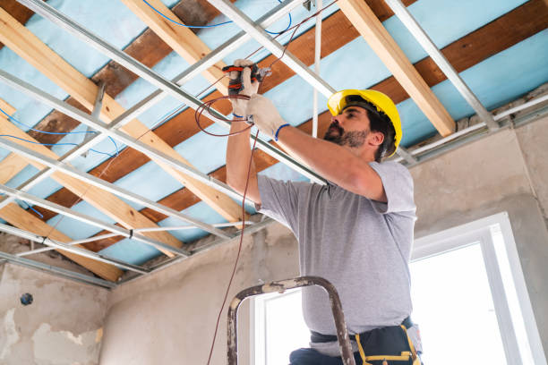

Osseo Minnesota
info@Tophandyman.pro
Osseo Minnesota
info@Tophandyman.pro

Need dependable handyman solutions in Osseo Minnesota ? Our skilled team delivers top-quality repairs, installations, and upgrades. Affordable, professional, and always on time—contact us for a free quote!
Click Here To Call Us (877) 848-1711When it comes to reliable and efficient handyman services in Osseo Minnesota our team is your trusted choice. Whether you need minor repairs, installations, or full-scale maintenance, we are here to handle it all. Our highly skilled professionals bring years of experience to every project, ensuring quality workmanship you can depend on.
We specialize in a wide range of services, including home repairs, plumbing fixes, electrical maintenance, painting, carpentry, and much more. Need help assembling furniture or mounting a TV? We've got you covered! Our comprehensive solutions save you time, money, and the hassle of dealing with multiple contractors. We are your one-stop shop for all your home improvement needs.
At our company, we pride ourselves on excellent customer service and attention to detail. We work closely with you to understand your requirements and deliver results that exceed expectations. With flexible scheduling, affordable rates, and a commitment to satisfaction, we ensure a seamless experience from start to finish.
Choose our handyman services in Osseo Minnesota for professional solutions tailored to your needs. Contact us today for a free estimate and let us bring your home improvement projects to life. Reliable, affordable, and always on time – we are the handyman service you can trust in Osseo Minnesota .
Residential & commercial Handy man
Quality services at affordable prices
Immediate 24/ 7 emergency services


At Handy man, we specialize in providing expert handyman solutions for both residential and commercial needs in Osseo Minnesota . Whether you need quick repairs, home improvements, or ongoing maintenance, our team of skilled professionals is here to offer reliable, efficient, and high-quality services tailored to your specific requirements.
We understand that every property, whether a home or business, requires attention to detail and a high standard of craftsmanship. Our residential services include everything from plumbing, electrical repairs, painting, and flooring to carpentry, drywall, and more. For commercial clients in Osseo Minnesota we offer comprehensive maintenance and repair solutions that keep your business running smoothly, including office remodeling, light installations, and general repairs.
Our handyman team is dedicated to providing prompt and affordable services without compromising on quality. We use top-tier materials and the latest tools to ensure every job is completed to perfection. With years of experience serving homes and businesses across Osseo Minnesota we’ve built a reputation for being trustworthy, efficient, and dependable.
Choose Handy man for your handyman services in Osseo Minnesota and experience the difference that expert care and attention to detail can make for your property. Contact us today for a consultation, and let’s discuss how we can assist you with all your handyman needs!
Residential & commercial Handy man
Quality services at affordable prices
Immediate 24/ 7 emergency services
Proper weatherproofing and insulation are essential for maintaining a comfortable home throughout every season. Our weatherproofing and insulation services ensure that your home stays warm in the winter and cool in the summer, while also reducing energy costs.
Our team specializes in assessing your home for air leaks, drafts, and inadequate insulation. We offer customized solutions that might include sealing cracks, adding insulation to attics and walls, or installing weather stripping around doors and windows.
Why choose us for your weatherproofing and insulation needs? We understand that maintaining home comfort can be challenging, which is why we focus on quality service and effective solutions. Our technicians are trained to implement the best practices in weatherization, ensuring that your home is energy-efficient and comfortable all year long.
Investing in weatherproofing and insulation can lead to significant savings on your energy bills and improved comfort in your home. Let our experienced team help you create an energy-efficient sanctuary .

Your home's siding is one of its first lines of defense against the elements. If you’re facing issues like cracks, warping, or fading, our siding repair and installation services in Osseo Minnesota will restore both the durability and beauty of your home’s exterior.
Our skilled technicians are experienced in working with various materials, including vinyl, wood, and fiber cement. We offer comprehensive services, from minor repairs to full siding installations, ensuring that your home is protected and looks great.
Why trust us with your siding projects? We are committed to using high-quality materials and techniques to ensure lasting results. Our attention to detail and focus on customer service distinguish us from the competition, allowing us to provide beautiful, functional siding solutions tailored to your needs.
Your home deserves the best, and our siding repair and installation services in Osseo Minnesota are designed to enhance your property’s curb appeal and value. Contact us today to schedule your consultation and find out how we can help.

Embrace the future of living with our smart home installation and setup services . Our team specializes in integrating smart technologies that enhance convenience, security, and energy savings. From smart thermostats to advanced security systems, we provide full-service installation and customization tailored to your needs. Choose us to transform your home into a modern, connected space that enhances your lifestyle.

Every season brings unique maintenance challenges for homeowners. Our seasonal and outdoor handyman services in Osseo Minnesota are designed to keep your home safe and functional year-round. From winterization and summer prepping to outdoor repairs and upkeep, we have you covered. Our team understands the demands of seasonal changes and is here to help protect your home investment. Count on us for dependable service that caters to the specific needs of each season.

Seasonal home maintenance is crucial for keeping your property in top shape year-round. At Handy man, we offer comprehensive spring and fall home maintenance services in Osseo Minnesota helping you prepare your home for changing weather conditions.
Our team conducts thorough inspections and performs necessary maintenance tasks, such as checking roofs, cleaning gutters, inspecting HVAC systems, and preparing gardens for seasonal changes. We aim to prevent problems before they arise, extending the life of your essential home systems.
Why choose us for seasonal maintenance? Our commitment to quality and attention to detail ensure that no aspect of your home is overlooked. With Handy man, you can rest easy knowing your home is ready for whatever the season may bring, with reliable service from trusted professionals .
An attractive yard boosts curb appeal and enhances outdoor enjoyment. Our yard maintenance and landscaping services include lawn care, gardening, mulching, and more. We offer customized solutions that fit your preferences and budget while ensuring your outdoor space remains healthy and beautiful. Choose us for dedicated service that enhances your home’s exterior and creates an inviting atmosphere for family and friends.

The holiday season is a special time, and we help you make it memorable with our holiday light installation services . Our team designs and installs stunning light displays that transform your home into a winter wonderland, all while ensuring safety and compliance. We handle all aspects of installation and removal, letting you enjoy the festivities without the hassle. Choose us for magical holiday light installations that bring joy to your celebrations.

Outdoor furniture enhances your outdoor living space, but it can experience wear and tear from exposure to the elements. Our outdoor furniture repair and assembly services in Osseo Minnesota are designed to restore and maintain your outdoor furniture, allowing you to enjoy your patio, deck, or garden.
Whether you need a new piece of furniture assembled or existing furniture repaired, our skilled team is ready to assist. We work with various materials, ensuring that your outdoor furniture is both functional and stylish.
What sets us apart? We are committed to high-quality craftsmanship and outstanding customer service. Our technicians take the time to understand your needs and offer effective solutions that fit your budget.
Don’t let damaged furniture keep you from enjoying your outdoor space. Trust our team for all your outdoor furniture repair and assembly needs .

Your roof is one of the most critical components of your home, safeguarding you from moisture, heat, and debris. At Handy man, we specialize in roof inspection and minor repair services in Osseo Minnesota ensuring your roof remains in excellent condition.
Our experienced inspectors assess your roof thoroughly, identifying potential issues before they become significant problems. If repairs are necessary, we skillfully address them, using high-quality materials to ensure lasting protection for your home.
Why trust Handy man? We emphasize transparent communication, quality workmanship, and customer satisfaction. Your home’s protection is our priority, and we work diligently to keep your roof in top shape for years to come. Count on us for expert roof inspection and repair services .
Years Experience
Expert Technicians
Satisfied Clients
Compleate Projects
When it comes to reliable, professional, and affordable handyman services in Osseo Minnesota Top Handyman is the trusted choice for homeowners and businesses alike. Our team is dedicated to providing high-quality services that exceed expectations, ensuring your home or office is in expert hands. Whether you need minor repairs, maintenance, or complete installations, we have the skills and experience to tackle any job with precision and care.
What sets us apart is our commitment to customer satisfaction. We understand that finding a trustworthy handyman can be daunting, which is why we prioritize clear communication, punctuality, and respectful service. Our team is not only experienced but also fully licensed and insured, giving you peace of mind knowing the job will be done right the first time.
At Top Handyman, we offer a wide range of services, from plumbing and electrical repairs to drywall installation, painting, and carpentry. No job is too big or small for our experts, and we work diligently to meet your needs on time and within budget. Our reputation for excellence in Osseo Minnesota is built on delivering results that last, ensuring your space remains functional and beautiful for years to come.
Choose Top Handyman for all your home improvement needs in Osseo Minnesota . Our professional, friendly team is here to make your life easier, one repair at a time. Reach out today and experience the difference.
Home is where the heart is, but over time, every house requires some tender love and care in the form of repairs and maintenance. At our company, we understand that maintaining your home can be a daunting task. From leaky faucets to creaky doors, we provide a comprehensive range of home repair services tailored to meet your unique needs. Our skilled handymen in Osseo Minnesota are dedicated to restoring comfort and functionality to your living space. We pride ourselves on our commitment to quality, punctuality, and customer satisfaction. Choose us for reliable, efficient home repair solutions that come with a satisfaction guarantee.
Have you ever found yourself drowning in a sea of Allen wrenches and instruction manuals after purchasing new furniture? Our furniture assembly services in Osseo Minnesota are designed to eliminate the stress of DIY assembly. Our professional handymen have years of experience putting together everything from IKEA furniture to custom pieces. We take the hassle out of flat-pack furniture assembly, ensuring that every piece is properly constructed and secure. By choosing us, you’re investing in quality craftsmanship and peace of mind, knowing that your new furniture will be safe and sturdy.
Drywall is a crucial component of any home, but it can easily suffer from damage due to wear and tear, moisture, or impact. Our drywall repair and installation services will restore the beauty of your walls. Whether you need patching, texture application, or complete drywall installation, our skilled team is equipped to handle it all. We use top-quality materials and techniques to ensure a flawless finish. Trust our experienced handymen to deliver high-quality, seamless repairs that will make your walls look as good as new.
Electrical issues can be both frustrating and dangerous. If you’re experiencing flickering lights or outlets that don’t work, it’s essential to have a qualified electrician address the problem promptly. At Handy man, we provide comprehensive electrical repair and installation services in Osseo Minnesota ensuring your safety and satisfaction.
Our licensed electricians are skilled in troubleshooting and resolving a variety of electrical problems efficiently. Whether it’s updating your light fixtures, installing new outlets, or addressing more complex wiring issues, our experts have the knowledge and experience to get the job done.
Safety is our top priority, which is why we adhere strictly to electrical codes and standards. With Handy man, you can trust that your electrical systems will be safe and efficient. Our dedication to superior service and customer satisfaction makes us the go-to choice for all electrical repairs and installations.
Plumbing issues can be disruptive and may escalate quickly if not addressed. Our plumbing repair and installation services are designed to efficiently resolve your plumbing problems. From leaky faucets to broken pipes, our experienced plumbers tackle each job with skill and dedication. We understand that timely service is critical; therefore, we offer emergency plumbing solutions to get your issues resolved fast. Choose us for our expertise, quick response time, and a guarantee of quality work that will last.
A fresh coat of paint can transform the look and feel of your home. Our professional painting and touch-up services are perfect for homeowners looking to revitalize their spaces or touch up areas that have been subject to wear and tear.
Our skilled painters bring years of experience and a keen eye for detail. We ensure that all surfaces are properly prepped before painting, using high-quality paints that provide a lasting finish. We understand the importance of color selection and can offer guidance on the perfect shades to match your style and decor.
Why choose our painting services We take pride in our commitment to customer satisfaction, ensuring that every stroke is flawless and meets your standards. We also aim to minimize disruption to your daily life by working efficiently and cleaning up after ourselves.
From interior to exterior painting, to touch-ups, our team is dedicated to providing exceptional service at every step. Experience the joy of a home that reflects your personal style, beautifully finished by our expert hands.
Over time, tile and grout can accumulate dirt and wear, compromising the aesthetics of your home. Our tile and grout repair services focus on restoring the beauty and functionality of your tiled surfaces. Whether it’s repairing cracked tiles, re-grouting, or deep cleaning, our experienced team is equipped with the right tools and techniques to get the job done effectively. We pride ourselves on our attention to detail and commitment to quality, ensuring your tiles look fresh and new.
Doors and windows are the entry points to your home, and damage to them can compromise your security and energy efficiency. At Handy man, we provide expert door and window repair services ensuring your home remains safe and stylish.
Our team is skilled in repairing a variety of door and window types, including wooden, fiberglass, and vinyl. Whether you need to fix a broken latch, replace a broken window pane, or enhance your door’s insulation, we are here to assist. We focus on maintaining the functionality and aesthetic appeal of your entrances and exits.
, our reputation is built on reliability, quality workmanship, and exceptional customer service. We take pride in our attention to detail and commitment to your satisfaction. Choose Handy man for all your door and window repair needs, and let us help you enjoy a secure and beautiful home.
Caulking and sealing are essential for maintaining energy efficiency and preventing water damage. Our caulking and sealing services help close gaps, prevent air leaks, and protect your home from moisture intrusion. Our experienced team uses high-quality materials and proper techniques to ensure a perfect seal that lasts. Trust us to identify vulnerable areas and provide solutions that enhance comfort and energy savings in your home.
Sometimes, a small renovation can make a big difference in your home’s function and appearance. Our minor home renovations services include kitchen updates, bathroom remodels, and more. We work closely with you to understand your vision and deliver results that exceed your expectations. With our attention to detail and commitment to quality, we help you create spaces that reflect your style while enhancing your home’s value.
We offer a wide range of specialized handyman services tailored to meet the unique needs of our clients. Whether it’s custom shelving, cabinet repairs, or unique installations, our skilled craftsmen are ready to assist. Our diverse skill set allows us to tackle projects of all kinds, big or small. Choose us for our professionalism, varied expertise, and a dedication to customer satisfaction that makes us the go-to option for handyman services in your area.
A deck can be the heart of outdoor living spaces, providing a perfect venue for gatherings and relaxation. Our deck repair and building services will help you maintain or construct your dream deck. We handle everything from complete deck construction to repairs and refurbishments of existing structures. Our expert team uses quality materials to ensure your deck is not only beautiful but also durable and safe. Count on us to enhance your outdoor living experience with a stunning deck.
A strong and attractive fence enhances security while adding charm to your property. Whether you need a new fence installed or an existing one repaired, our fence installation and repair services in Osseo Minnesota are ready to meet your needs with quality craftsmanship.
We offer a range of fencing options, from wooden to vinyl and chain-link, ensuring that your preferences and requirements are met. Our team is skilled in all aspects of fence installation and repair, and we use only quality materials to ensure durability and aesthetic appeal.
What makes us the best choice for your fencing needs? We take the time to understand your property, lifestyle, and preferences before starting any project. Our experienced crew ensures that your fence is installed correctly and is built to last. Moreover, we are committed to providing excellent customer service, answering all questions and keeping you informed throughout the process.
With our expertise and dedication, you can enjoy a beautifully installed or repaired fence that enhances the security and beauty of your home in Osseo Minnesota .
Flooring can drastically change the look and feel of any space. Our flooring installation services encompass various materials, including laminate, vinyl, hardwood, and more. We offer expert advice on material selection and design to suit your lifestyle and budget. Our experienced installers deliver timely and precise installation, ensuring a flawless finish that enhances your space's aesthetics and functionality. Choose us for a professional flooring experience from start to finish.
Improving your home's energy efficiency not only reduces your carbon footprint but can also lead to significant cost savings. Our home energy efficiency upgrade services assess various aspects of your home, from insulation to windows and heating systems. Our trained technicians will provide solutions tailored to your specific needs, ensuring that every upgrade contributes to a more sustainable and cost-effective home. Choose us to enhance your comfort while saving money on utility bills.
The kitchen and bathroom are essential spaces in any home, and well-functioning fixtures are crucial. At Handy man, we specialize in bathroom and kitchen fixture repairs ensuring that everything from leaky faucets to malfunctioning sinks is handled promptly and professionally.
Our experienced technicians are equipped to repair or replace a variety of fixtures, including sinks, faucets, toilets, and showerheads, ensuring that your spaces are functional and aesthetically pleasing. We understand the importance of timely repairs in these high-traffic areas and respond quickly to your needs.
Customer satisfaction is our priority, and we believe in delivering quality work that stands the test of time. With Handy man, residents of Osseo Minnesota can expect reliable services and thorough solutions that enhance their everyday life.
Clean and functional gutters are vital for protecting your home from water damage. Our gutter cleaning and repair services in Osseo Minnesota ensure that your gutters are debris-free and functioning effectively. We offer thorough cleaning, inspections, and necessary repairs to keep your system in optimal working order. With our services, you’ll protect your home’s foundation and roofing by directing rainfall away properly. Choose us for professional, timely service that gives you peace of mind.
Over time, dirt, mold, and grime can accumulate on your home’s exterior surfaces, making your property look dull and uninviting. Our professional pressure washing services are the perfect solution to restore the beauty of your home and enhance curb appeal.
We utilize high-quality equipment and environmentally-friendly cleaning solutions to safely remove tough stains and contaminants from various surfaces, including siding, driveways, decks, and patios. Our experienced technicians understand the best techniques for each type of surface, ensuring effective results without causing damage.
Why choose our pressure washing services? We pride ourselves on delivering exceptional customer service and quality results. Our team is reliable and punctual, showing up when we say we will and treating your property with respect. We also offer flexible scheduling options to suit your needs.
Experience the difference with our pressure washing services, and let us bring back the shine to your property in Osseo Minnesota . Your satisfaction is our priority, and we guarantee a thorough, professional job every time.
When you need reliable, fast, and quality handyman services in Osseo Minnesota look no further than our expert team. We specialize in providing a wide range of home repair and improvement solutions to meet the needs of homeowners and businesses across Osseo Minnesota . Whether you're dealing with minor repairs or major renovations, we are dedicated to delivering top-notch services with a focus on speed, efficiency, and outstanding craftsmanship.
Our experienced handymen are fully equipped to tackle everything from electrical and plumbing repairs to drywall, painting, carpentry, and more. We understand the importance of your time and ensure that all jobs are completed promptly and with minimal disruption to your daily routine. At our company, we pride ourselves on delivering high-quality work that exceeds expectations, making us the go-to choice for handyman services in Osseo Minnesota .
We provide affordable pricing without compromising on quality. Our team is committed to providing reliable services that keep your home or business functioning smoothly. No project is too big or small, and we offer flexible scheduling to accommodate your needs. Trust us to handle all your handyman tasks with precision and care—your satisfaction is our top priority.
Contact us today for fast, efficient, and affordable handyman services in Osseo Minnesota and experience the difference of working with true professionals.
Osseo (/ˈɒsi.oʊ/ OSS-ee-oh) is a small city in Hennepin County, Minnesota, United States. As of the 2020 United States Census, it has a population of 2,688.
Absolutely! We take on projects of all sizes, including small tasks like hanging pictures or assembling furniture.
Top Handyman offers a wide range of services in Osseo Minnesota including repairs, installations, maintenance, painting, carpentry, and more to meet your home improvement needs.
For smaller projects or repairs, a handyman is ideal. For larger renovations, you might need a contractor.
Yes, we offer flexible scheduling, including weekend appointments.
Yes, we incorporate sustainable practices and eco-friendly materials whenever possible.
Yes, we provide basic plumbing services such as fixing leaks, unclogging drains, and installing fixtures.
Yes, Top Handyman is fully insured, giving you peace of mind for any project .
Yes, we provide furniture assembly services for all types of furniture.
Yes, we have a minimum service charge to cover basic project costs. Contact us for details.
All our professionals are skilled, trained, and adhere to licensing requirements in Osseo Minnesota .
Yes, our work is backed by a satisfaction guarantee to ensure top-quality results.
Most tools are included, but materials are billed separately if needed for your project.
Clear the workspace and ensure access to the area where work will be performed.
Yes, we specialize in drywall repairs, including patching holes and fixing cracks.
Yes, we provide appliance installation services for various home appliances.
Yes, we offer recurring maintenance plans to keep your property in top condition.
Yes, we provide transparent, upfront estimates so you know the cost before we start.
Yes, we offer same-day services whenever possible, depending on availability. Contact us to check our schedule.
Absolutely! We assist with home improvement projects like painting, shelving, and remodeling.
Yes, we handle emergency repairs to address urgent issues promptly.
We strive to start projects as soon as possible. Contact us to check availability.
We serve all neighborhoods and suburbs with. Contact us to confirm your location.
Our reliability, skilled professionals, and customer-first approach make us the top choice in Osseo Minnesota .
You can reach us by phone, email, or through the contact form on our website.
Yes, we offer services like fence repairs, deck maintenance, and gutter cleaning.
Yes, we can handle minor electrical repairs like replacing switches, outlets, or light fixtures.
Our rates are competitive and vary depending on the scope of work. Contact us for a free estimate.
The time varies based on the project’s size and complexity. We always aim for efficient service.
You can easily book our services by calling us, visiting our website, or filling out our online contact form.
We accept various payment methods, including cash, credit cards, and online transfers.
I had some broken tiles in my bathroom and Top Handyman was able to replace them quickly and efficiently. Great service and highly skilled technicians!
Profession
We had a broken shelf in our living room and Top Handyman fixed it perfectly. They were professional, friendly, and did the job right the first time!
Profession
The Top Handyman team did an excellent job painting my garage. They were thorough, efficient, and left no mess behind. I’m so glad I chose them for the job!
Profession
Osseo MN Handy man Pros
(877) 848-1711
info@Tophandyman.pro
09.00 AM - 09.00 PM
09.00 AM - 12.00 PM